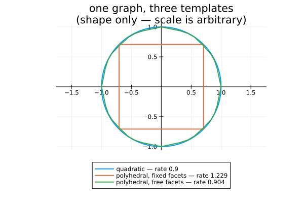
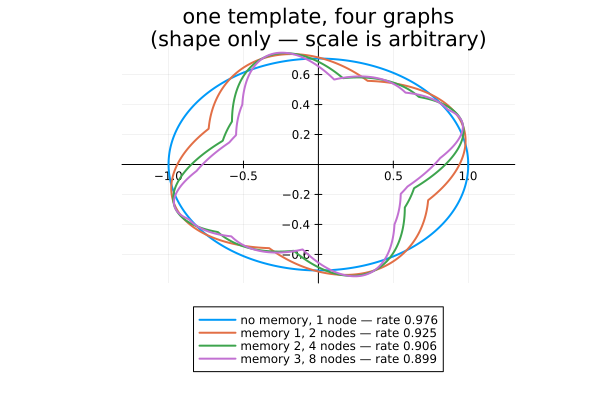
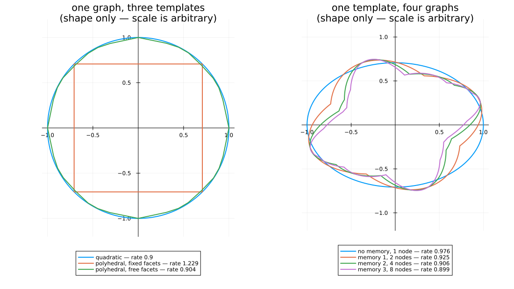

The two axes, drawn
The package's two axes on one figure.
- Left — one graph, three templates: what the node functions are.
- Right — one template, four graphs: what the graph remembers.
Both panels show the certified sublevel set $\{x : V(x) \le 1\}$ of the common function, which is what certificate(x) evaluates.
import PathCompleteCertificates as PCC
import Clarabel
using HybridSystems
using Plots
const OPTIMIZER = Clarabel.OptimizerClarabel.MOIwrapper.OptimizerNo level-set tracing is needed. Every node function is positively homogeneous of degree $d$ = rate_exponent, and so is the common function built from them, so $V(ru) = r^d V(u)$ and the radius in direction $u$ is exactly $V(u)^{-1/d}$. The same three lines work for every template, which is the point.
function sublevel_boundary(certificate; samples = 721)
degree = PCC.rate_exponent(PCC.template(certificate))
angles = range(0, 2pi; length = samples)
radii = [certificate([cos(a), sin(a)])^(-1 / degree) for a in angles]
radii ./= maximum(radii)
return radii .* cos.(angles), radii .* sin.(angles)
endsublevel_boundary (generic function with 1 method)Every edge condition is homogeneous, so a certificate is determined only up to scale, and each template pins that scale differently — $P \succeq I$ for the quadratic one, a floor on the weights for the polyhedral ones. Plotted raw, the sets differ in size for reasons that mean nothing, and the eye reads the smallest as the tightest. The quality of a certificate is its rate, which is in the legend.
Left: fix the graph, vary the template
One mode, a rotation scaled by 0.9, on a single self-loop. The true joint spectral radius is 0.9, and the templates disagree about how close they get to it — a rotation is exactly quadratically stable, badly approximated by a fixed-facet polytope, and well approximated once the facets are free.
THETA = pi / 3
ROTATION = [0.9 * [cos(THETA) -sin(THETA); sin(THETA) cos(THETA)]]
rotation_graph = GraphAutomaton(1)
add_transition!(rotation_graph, 1, 1, 1)
rotation_problem = PCC.StabilityProblem(PCC.switched_system(ROTATION))
templates = [
("quadratic", PCC.QuadraticTemplate()),
("polyhedral, fixed facets", PCC.PolyhedralTemplate(1, 2)),
(
"polyhedral, free facets",
PCC.ConicPolyhedralTemplate([PCC.planar_conic_partition(3)]),
),
]
left = plot(;
title = "one graph, three templates\n(shape only — scale is arbitrary)",
aspect_ratio = :equal,
legend = :outerbottom,
framestyle = :origin,
)
for (name, template) in templates
certificate = PCC.jsr_bound(
template,
rotation_graph,
rotation_problem;
optimizer = OPTIMIZER,
rtol = 1e-4,
)
xs, ys = sublevel_boundary(certificate)
plot!(
left,
xs,
ys;
label = "$name — rate $(round(certificate.rate; digits = 3))",
lw = 2,
)
end
left
Right: fix the template, vary the graph
A rotation and a shear. One quadratic function for the whole system is conservative; letting the certificate remember the last $k$ modes is not. The sublevel sets are unions of ellipses — non-convex, and richer with memory, which is (Philippe et al., 2017)'s point that a path-complete Lyapunov function is a common one built from minima and maxima.
MIXED = [0.69 * [0.0 1.0; -1.0 0.0], 0.69 * [1.0 1.0; 0.0 1.0]]
mixed_problem = PCC.StabilityProblem(PCC.switched_system(MIXED))
memoryless = GraphAutomaton(1)
add_transition!(memoryless, 1, 1, 1)
add_transition!(memoryless, 1, 1, 2)
graphs = [("no memory", memoryless)]
for order in 1:3
push!(graphs, ("memory $order", PCC.de_bruijn(order, 2)))
end
right = plot(;
title = "one template, four graphs\n(shape only — scale is arbitrary)",
aspect_ratio = :equal,
legend = :outerbottom,
framestyle = :origin,
)
for (name, graph) in graphs
certificate = PCC.jsr_bound(
PCC.QuadraticTemplate(),
graph,
mixed_problem;
optimizer = OPTIMIZER,
rtol = 1e-4,
)
n = PCC.n_nodes(graph)
xs, ys = sublevel_boundary(certificate)
plot!(
right,
xs,
ys;
label = "$name, $n node$(n == 1 ? "" : "s") — rate $(round(certificate.rate; digits = 3))",
lw = 2,
)
end
right
Each bound is tighter than the last, necessarily: a richer graph can reproduce a poorer one by copying its single function onto every node. The sets are not nested — a certificate is homogeneous, so containment between two of them carries no information. Read the rates.
Both together
figure = plot(left, right; layout = (1, 2), size = (1100, 620))
The template decides the shape of the certificate and how conservative it is: a rotation is exactly quadratically stable, so only the quadratic template reaches the true rate 0.9.
The graph decides how much history the certificate may use. Each extra mode of memory tightens the bound, and the sublevel set becomes a union of more ellipses — non-convex, which is exactly what a path-complete certificate buys over a single Lyapunov function.
This page was generated using Literate.jl.